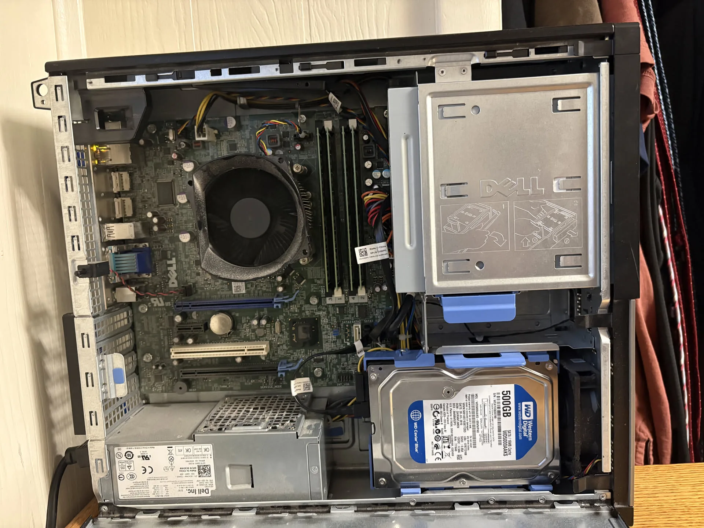

Systems Engineering · Linux · Self Hosting
Proxmox Homelab Infrastructure
A production-style homelab running self-hosted services across Proxmox LXC containers and VMs, with documented recovery paths, automated backups, and operational runbooks.

Problem
I wanted a practical environment for learning infrastructure beyond local development. The goal was to run real services that I personally use, then manage them with the same concerns a production environment would have: uptime, backups, networking, service isolation, and recovery documentation.
Architecture
The homelab runs on Proxmox with services split across LXC containers and VMs. Services include DNS ad-blocking, photo management, media serving, container management, game hosting, and supporting utilities.
Service Isolation
LXC containers keep services separated while keeping resource overhead low.
Operations
Runbooks document service locations, ports, recovery steps, and maintenance procedures.
Automation
Python and shell scripts support backup workflows and routine maintenance.
What I Learned
This project made infrastructure problems concrete. DNS configuration, firewall behavior, storage planning, container networking, backup verification, and service restarts all become easier to understand when they affect systems I actually rely on.
It also gave me a strong foundation for deploying later projects, including the MLB pipeline, which uses the same homelab environment and systemd-managed services.